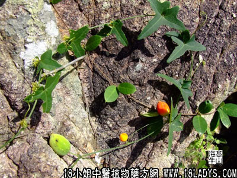

土白蔹(中药材植物名:茅瓜)(植物科目:葫芦科)

植物名：茅瓜。
生长环境：本品为草质藤本，生于路旁或灌木丛间。
分布：印度至我国，马来西亚，广州近郊有野生。
入药部分：根。
采集期：夏、秋。
自采地点：山岗。
性味：性寒、味苦。
功能：生肌去腐止痛，消痈疽疮肿，散结。
主治、用量和用法：1、热毒疮：生用，加片糖捣烂，外敷患处；2、烂肉久不收口：干用为末，撒饰患处。或开麻油搽患处里；3、痕芋头刺激皮肤痕痒：生干可用，煎水外洗患处。
（方歌）治热毒疮土白蔹，捣烂加糖敷更验，远年烂肉口不收，晒干为末敷即敛。
本文解释权归中药大全，本文地址：https://www.daquan.com/post/1556.html